Course: CSE-4115 Machine Learning
Department of Computer Science and Engineering (CSE)
Bangladesh Army University of Engineering & Technology (BAUET)
Batch: 17th — 4th Year 1st Semester, Summer-26
Assignment: Machine Learning Project (15 Marks)
Student Name: Zarif Ahnaf Dhrubo
Student ID: 0812310205101023
This project investigates whether routine clinical measurements can be used to predict the presence of heart disease. The publicly available Heart Failure Prediction Dataset (fedesoriano, Kaggle; 918 patients, 11 features) was analysed using a complete supervised machine-learning workflow: data inspection, domain-aware cleaning, feature encoding and scaling, exploratory data analysis, model training, evaluation, 5-fold cross-validation and hyperparameter tuning. Six classifiers were compared: Logistic Regression, K-Nearest Neighbors, Gaussian Naive Bayes, Decision Tree, Random Forest and Support Vector Machine. The best held-out test performance was obtained by Logistic Regression with 88.59% accuracy, 88.57% precision, 91.18% recall, 0.8986 F1-score and 0.9323 ROC-AUC. The best cross-validated accuracy was obtained by SVM (85.84%), but the top models were statistically indistinguishable. Feature-importance analysis identified ST slope, maximum heart rate, ST depression (Oldpeak), exercise-induced angina, chest-pain type, sex and age as the main predictors. The project also documents an important data-quality finding: treating physiologically impossible zero cholesterol values as missing reverses the apparent sign of cholesterol's relationship with heart disease. All code, figures and results are reproducible from the included Jupyter notebook.
Keywords: heart disease, classification, supervised learning, logistic regression, random forest, SVM, cross-validation, hyperparameter tuning, feature importance
Cardiovascular disease is one of the leading causes of death worldwide. Early identification of high-risk patients allows clinicians to order further tests, adjust medication and recommend lifestyle changes sooner. A machine-learning model that estimates risk from inexpensive, routinely collected clinical measurements can therefore be a useful decision-support tool.
The objective of this assignment is to apply the complete supervised-learning pipeline to a real-world public dataset and to compare several classification algorithms rigorously. The specific objectives are:
The Heart Failure Prediction Dataset was selected after benchmarking all four datasets offered in the assignment. On an identical preprocessing and train/test protocol, it produced the strongest and most balanced classification results (≈ 88.6% accuracy / 0.933 ROC-AUC), while retaining clear clinical interpretability. The other candidates were weaker: Titanic reached about 81% accuracy, house-price regression reached R² ≈ 0.855 but required far heavier preprocessing, and the student performance dataset had little predictable signal from demographic variables alone (R² ≈ 0.18).
Source: Heart Failure Prediction Dataset — fedesoriano, Kaggle
Local copy: data/heart.csv
Size: 918 patients × 12 columns (11 features + target)
Target: HeartDisease — 1 = heart disease present (553 patients, 55.3%), 0 = no heart disease
(410 patients, 44.7%). The classes are close to balanced.
| Feature | Type | Description |
|---|---|---|
Age |
Numeric (years) | Age of the patient |
Sex |
Categorical (M/F) | Sex of the patient |
ChestPainType |
Categorical (TA, ATA, NAP, ASY) | Type of chest pain |
RestingBP |
Numeric (mm Hg) | Resting blood pressure |
Cholesterol |
Numeric (mg/dl) | Serum cholesterol |
FastingBS |
Binary (0/1) | Fasting blood sugar > 120 mg/dl |
RestingECG |
Categorical (Normal, ST, LVH) | Resting electrocardiogram result |
MaxHR |
Numeric (bpm) | Maximum heart rate achieved |
ExerciseAngina |
Categorical (Y/N) | Exercise-induced angina |
Oldpeak |
Numeric | ST depression induced by exercise relative to rest |
ST_Slope |
Categorical (Up, Flat, Down) | Slope of the peak exercise ST segment |
HeartDisease |
Binary (0/1) | Target variable |
There are no NaN values and no duplicate rows, but 172 patients have
Cholesterol = 0 and 1 patient has RestingBP = 0. These are not physically plausible
measurements and are treated as missing values.
All experiments were implemented in Python 3 with pandas, scikit-learn, matplotlib and
seaborn. A fixed random seed (random_state = 42) was used throughout. The complete code and
executed outputs are in notebooks/Heart_Disease_Prediction.ipynb.
The preprocessing decisions are summarised below.
| Step | Treatment | Reason |
|---|---|---|
| Invalid zeros | Replace Cholesterol = 0 and RestingBP = 0 with NaN |
Zero cholesterol or blood pressure is physiologically impossible |
| Missing values | Median imputation inside the model pipeline | Robust to outliers; fitted only on training data |
| Categorical features | One-hot encoding, dropping the first level | Models require numeric input; avoids perfect collinearity |
| Numerical features | StandardScaler |
Required for KNN/SVM and helpful for regularised Logistic Regression |
| Train/test split | 80/20 stratified split (734 / 184 patients) | Preserves the 55/45 class balance in both sets |
| Leakage prevention | All preprocessing inside a scikit-learn Pipeline |
The test set never influences imputation, encoding or scaling |
A key data-quality finding. Of the 172 zero-cholesterol records, 152 belong to patients with heart disease. Leaving the zeros as real measurements makes the disease group's mean cholesterol artificially low and produces a misleading negative correlation (≈ −0.23). After marking the zeros as missing and imputing them, the correlation becomes weakly positive (≈ +0.10). This demonstrates why domain knowledge must precede automatic preprocessing.
The transformed feature matrix contains 15 columns: six scaled numerical features and nine
one-hot columns (1 for Sex, 3 for ChestPainType, 2 for RestingECG, 1 for ExerciseAngina and
2 for ST_Slope).
The EDA used histograms, bar plots of disease rates, box plots, a correlation heat map and a pair
plot. The main observations are summarised here; all figures are in report/figures/.
Target distribution (figures/01_target_distribution.png). The classes are reasonably balanced
(55.3% disease, 44.7% no disease). Accuracy is therefore meaningful, but recall for the disease
class is especially important in a screening context, because a false negative (missed disease) is
usually more costly than a false positive.
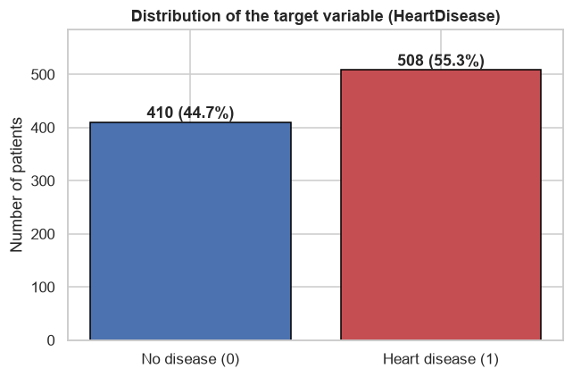
Figure 1 — Distribution of the target variable (HeartDisease).
Numerical distributions (figures/02_numeric_distributions.png, figures/04_boxplots.png):
MaxHR is much lower in the disease group (mean 127.7 vs 148.2 bpm). A high achievable maximum
heart rate is protective.Oldpeak (ST depression) is clearly higher in the disease group (mean 1.27 vs 0.41). The disease
rate rises from about 35% for Oldpeak ≤ 0 to over 90% for Oldpeak > 2.Cholesterol and RestingBP show substantial overlap between classes and are weak single
predictors after cleaning.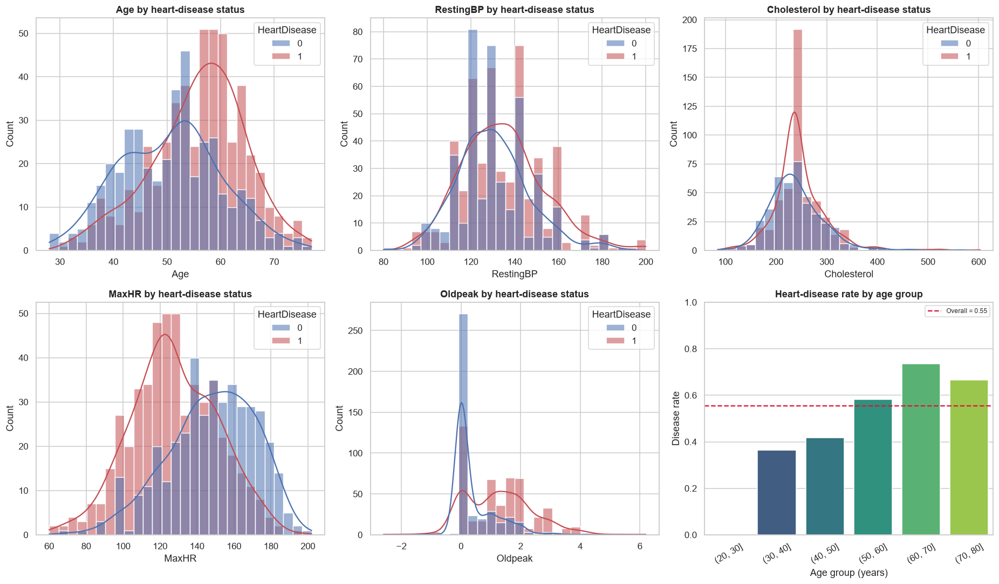
Figure 2 — Distributions of the main clinical measurements, split by heart-disease status.
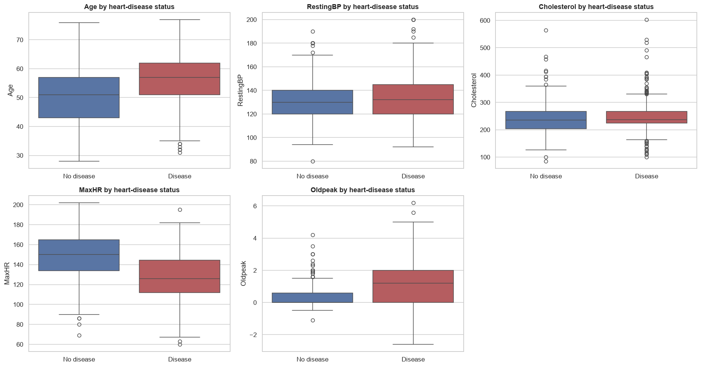
Figure 3 — Box plots of the numerical features for the two classes.
Categorical disease rates (figures/03_categorical_rates.png):
| Feature | Group | Disease rate |
|---|---|---|
Sex |
Female | 25.9% |
| Male | 63.2% | |
ChestPainType |
ATA | 13.9% |
| NAP | 35.5% | |
| TA | 43.5% | |
| ASY | 79.0% | |
ExerciseAngina |
N | 35.1% |
| Y | 85.2% | |
ST_Slope |
Up | 19.7% |
| Down | 77.8% | |
| Flat | 82.8% | |
FastingBS |
0 | 48.0% |
| 1 | 79.4% | |
RestingECG |
Normal | 51.6% |
| LVH | 56.4% | |
| ST | 65.7% |
The strongest categorical signals are sex, exercise-induced angina, ST slope,
chest-pain type and fasting blood sugar. The counter-intuitive ASY result (asymptomatic
patients have the highest disease rate) is well known in this dataset: many patients with silent
ischemia are labelled asymptomatic, while atypical angina (ATA) is the least severe group.
RestingECG is the weakest categorical feature.
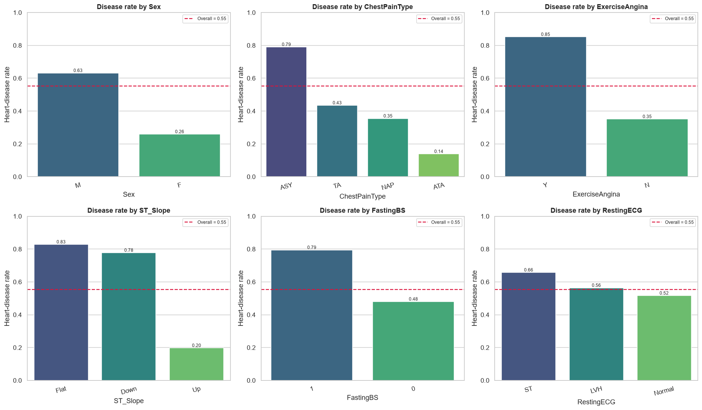
Figure 4 — Heart-disease rate for each category, with the overall rate as a dashed line.
Correlation analysis (figures/05_correlation_heatmap.png). The strongest linear correlations
with HeartDisease are MaxHR (−0.40), Oldpeak (+0.40), Age (+0.28), FastingBS (+0.27),
RestingBP (+0.12) and Cholesterol (+0.10). Oldpeak and MaxHR are only weakly correlated with
each other, so they contribute complementary information.
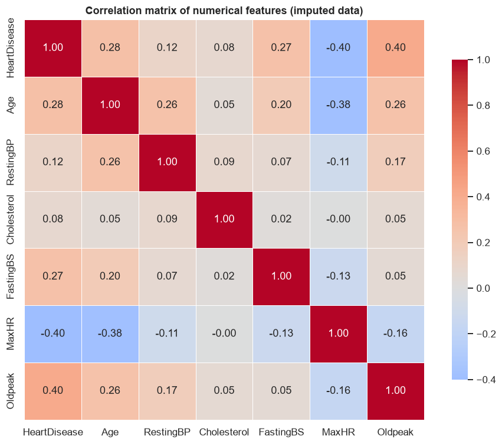
Figure 5 — Correlation matrix of the numerical features after cleaning.
Pair plot (figures/06_pairplot.png). There is visible but overlapping separation, mainly along
MaxHR and Oldpeak. No single feature separates the classes perfectly, which motivates testing
non-linear models such as Random Forest and SVM.
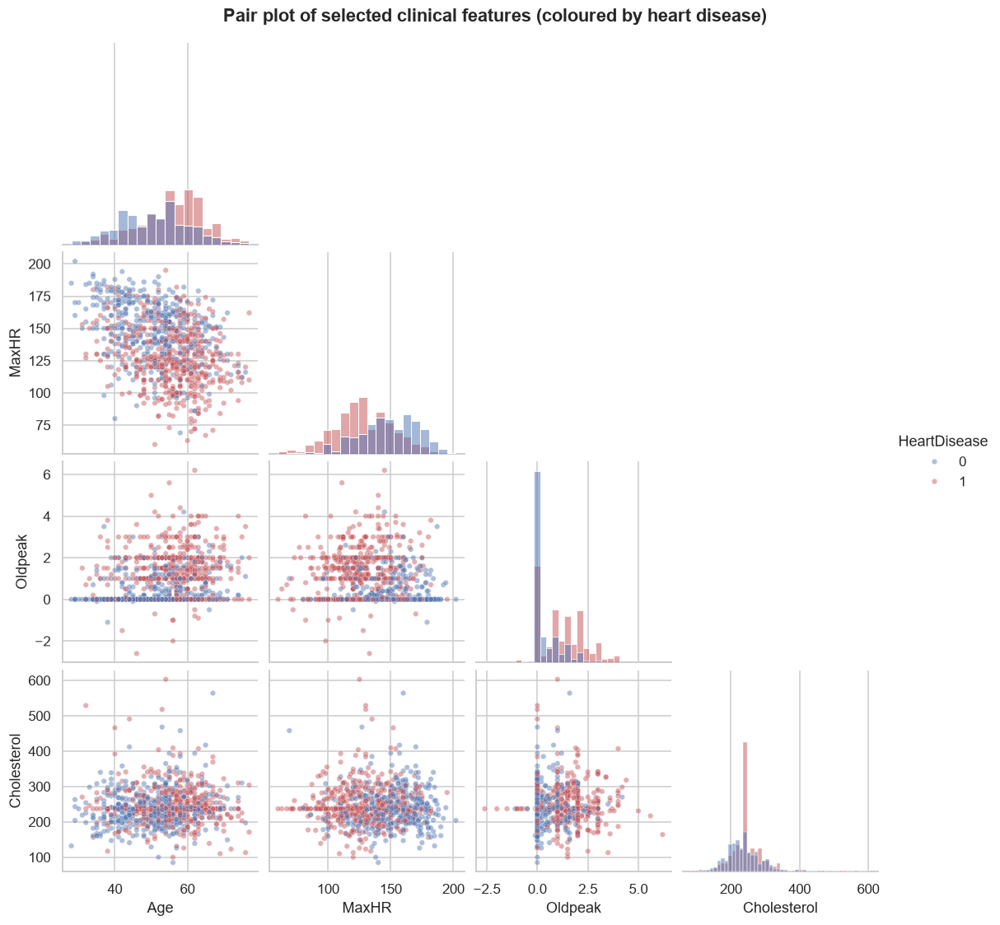
Figure 6 — Pair plot of selected clinical features, coloured by heart-disease status.
Age-group and Oldpeak-bin summaries (figures/07_age_oldpeak_rates.png). Risk rises steadily
with age and with ST depression. Above an Oldpeak of 2, more than 90% of patients in this dataset
have heart disease.
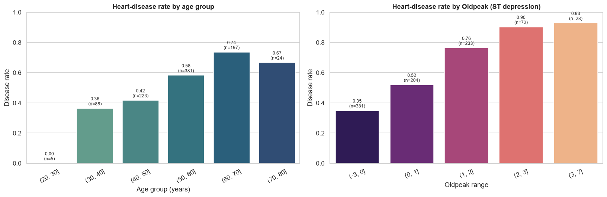
Figure 7 — Heart-disease rate by age group (left) and by Oldpeak range (right).
Six classifiers were trained on the same preprocessed data:
For each model the following were reported:
Model stability was estimated with 5-fold stratified cross-validation on the training set. Preprocessing was re-fitted inside every fold, so the validation folds never influenced scaling or imputation.
Hyperparameter tuning was performed with GridSearchCV, using F1-score as the selection
criterion (because both false positives and false negatives matter, and F1 balances them):
n_estimators ∈ {100, 200, 300}, max_depth ∈ {4, 6, 8, None},
min_samples_split ∈ {2, 5}, min_samples_leaf ∈ {1, 2} — 48 configurations × 5 folds = 240 fits.C ∈ {0.01, 0.1, 1, 10, 100} — 5 configurations × 5 folds = 25 fits.Results on the held-out 20% test set (184 patients):
| Model | Accuracy | Precision | Recall | F1-score | ROC-AUC |
|---|---|---|---|---|---|
| Logistic Regression | 0.8859 | 0.8857 | 0.9118 | 0.8986 | 0.9323 |
| Gaussian Naive Bayes | 0.8750 | 0.9072 | 0.8627 | 0.8844 | 0.9430 |
| Support Vector Machine | 0.8696 | 0.8679 | 0.9020 | 0.8846 | 0.9360 |
| Random Forest | 0.8641 | 0.8812 | 0.8725 | 0.8768 | 0.9307 |
| K-Nearest Neighbors | 0.8478 | 0.8627 | 0.8627 | 0.8627 | 0.9236 |
| Decision Tree | 0.7391 | 0.7700 | 0.7549 | 0.7624 | 0.7372 |
The majority-class baseline (always predict "heart disease") is 55.3% accuracy. Every model except the single Decision Tree improves substantially on this baseline. The top five models are separated by only about four percentage points — with 184 test patients, that corresponds to a handful of cases, so single-split differences must be interpreted cautiously.
Confusion matrices (figures/08_confusion_matrices.png) show that Logistic Regression detects
93 of the 102 disease cases (recall 91.2%) while producing 12 false positives. Gaussian Naive Bayes
has the highest precision (0.907) but a lower recall (0.863), so it misses more true disease cases.
SVM balances the two (recall 0.902, precision 0.868).
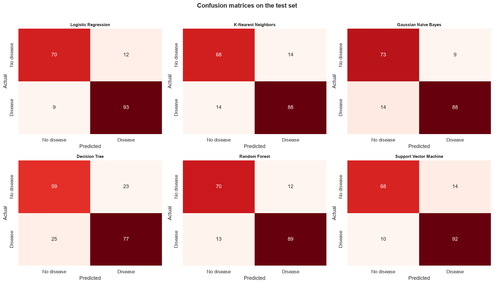
Figure 8 — Confusion matrices for the six classifiers on the 184-patient test set.
ROC curves (figures/09_roc_curves.png) confirm that all top models rank patients well:
Gaussian Naive Bayes (0.943), SVM (0.936), Logistic Regression (0.932), Random Forest (0.931) and
KNN (0.924). The Decision Tree is far behind (0.737).
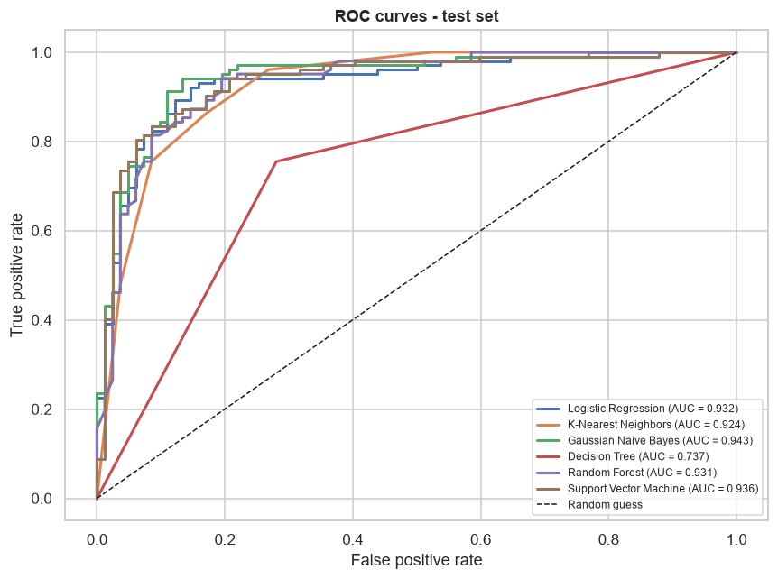
Figure 9 — ROC curves and AUC values for all six classifiers.
5-fold stratified cross-validation on the training set:
| Model | CV Accuracy | Std | CV Precision | CV Recall | CV F1 | CV F1 Std |
|---|---|---|---|---|---|---|
| Support Vector Machine | 0.8584 | 0.0461 | 0.8532 | 0.9041 | 0.8768 | 0.0359 |
| Random Forest | 0.8529 | 0.0339 | 0.8541 | 0.8917 | 0.8708 | 0.0255 |
| Logistic Regression | 0.8515 | 0.0289 | 0.8639 | 0.8720 | 0.8671 | 0.0223 |
| K-Nearest Neighbors | 0.8420 | 0.0316 | 0.8383 | 0.8867 | 0.8616 | 0.0253 |
| Gaussian Naive Bayes | 0.8393 | 0.0423 | 0.8578 | 0.8548 | 0.8552 | 0.0353 |
| Decision Tree | 0.7915 | 0.0332 | 0.8091 | 0.8180 | 0.8123 | 0.0322 |
Cross-validation changes the ordering: SVM is first, followed by Random Forest and Logistic Regression. The differences among the top three (0.858 vs 0.853 vs 0.852) are well within one standard deviation, so no model is significantly superior. Logistic Regression is the most stable across folds (std 0.029), while Decision Tree is clearly and consistently the weakest.
The CV scores are slightly lower than the single test-split scores (for example, Logistic Regression: 0.8515 CV vs 0.8859 test). This is expected — the test split happened to be relatively easy — and CV is the more trustworthy estimate of generalisation.
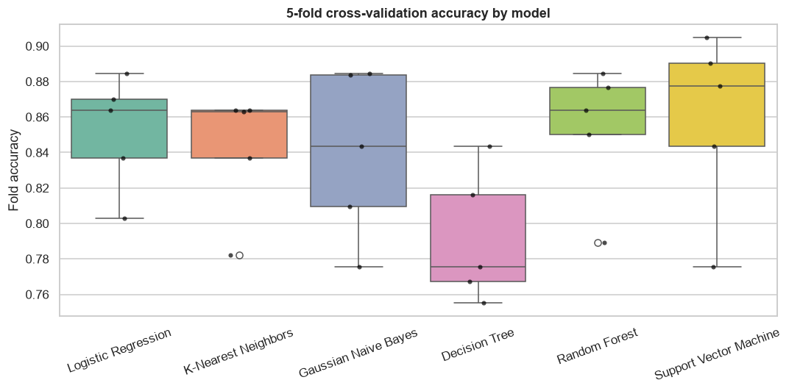
Figure 10 — Fold-level accuracy for 5-fold stratified cross-validation.
Random Forest. The best configuration was n_estimators = 100, max_depth = 8,
min_samples_split = 2, min_samples_leaf = 1. It achieved a best cross-validated F1 of 0.8766,
compared with 0.8708 for the default forest — an improvement of +0.0058. On the single test set,
however, accuracy moved from 0.8641 to 0.8587 and F1 from 0.8768 to 0.8725 (ROC-AUC 0.9307 → 0.9310).
The test change is within fold-to-fold noise.
Logistic Regression. The best value was C = 0.1, with a best cross-validated F1 of 0.8685
versus 0.8671 for the default — a marginal improvement of +0.0014. Test accuracy moved from 0.8859 to
0.8696 (F1 0.8986 → 0.8824), while test ROC-AUC improved slightly from 0.9323 to 0.9346.
Interpretation. Grid search did what it is designed to do: it improved the cross-validated F1 on
the training data. The small improvements did not transfer to the 184-patient test split, and the
test-set changes are much smaller than the cross-validation standard deviations (≈ 0.03–0.05). This
is an honest and instructive result: tuning is not guaranteed to improve a single small test split,
and hyperparameters should not be selected by repeatedly checking test performance, since that would
leak information. The tuned models are reported transparently in
report/final_model_comparison.csv.
| Model | Accuracy | F1-score | ROC-AUC |
|---|---|---|---|
| Logistic Regression | 0.8859 | 0.8986 | 0.9323 |
| Gaussian Naive Bayes | 0.8750 | 0.8844 | 0.9430 |
| Support Vector Machine | 0.8696 | 0.8846 | 0.9360 |
| Logistic Regression (tuned, C=0.1) | 0.8696 | 0.8824 | 0.9346 |
| Random Forest | 0.8641 | 0.8768 | 0.9307 |
| Random Forest (tuned, depth=8) | 0.8587 | 0.8725 | 0.9310 |
| K-Nearest Neighbors | 0.8478 | 0.8627 | 0.9236 |
| Decision Tree | 0.7391 | 0.7624 | 0.7372 |
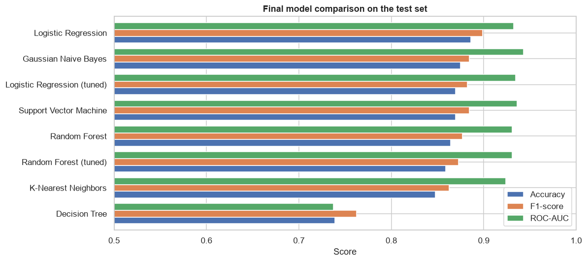
Figure 11 — Final comparison of all models (including tuned variants) on the test set.
Three complementary views were used: impurity-based importance from the Random Forest, permutation importance on the test set, and standardised Logistic Regression coefficients.
Random Forest impurity importance (top 10):
| Feature | Importance |
|---|---|
ST_Slope_Up |
0.2032 |
ST_Slope_Flat |
0.1261 |
MaxHR |
0.1074 |
Oldpeak |
0.1056 |
ExerciseAngina_Y |
0.0898 |
Age |
0.0697 |
Cholesterol |
0.0656 |
RestingBP |
0.0624 |
ChestPainType_ATA |
0.0472 |
Sex_M |
0.0355 |
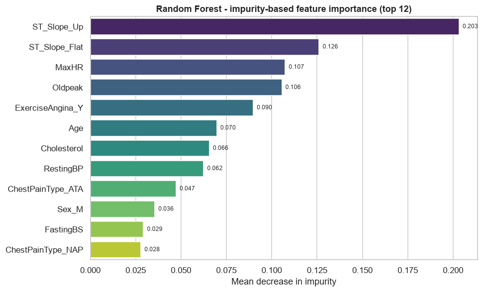
Figure 12 — Random Forest impurity-based feature importance (top 12).
Permutation importance on the test set (mean accuracy drop):
| Feature | Importance |
|---|---|
ST_Slope |
0.1503 |
Sex |
0.0337 |
ChestPainType |
0.0234 |
ExerciseAngina |
0.0193 |
FastingBS |
0.0179 |
Oldpeak |
0.0177 |
MaxHR |
0.0158 |
RestingECG |
0.0149 |
Cholesterol |
0.0114 |
Age |
0.0090 |
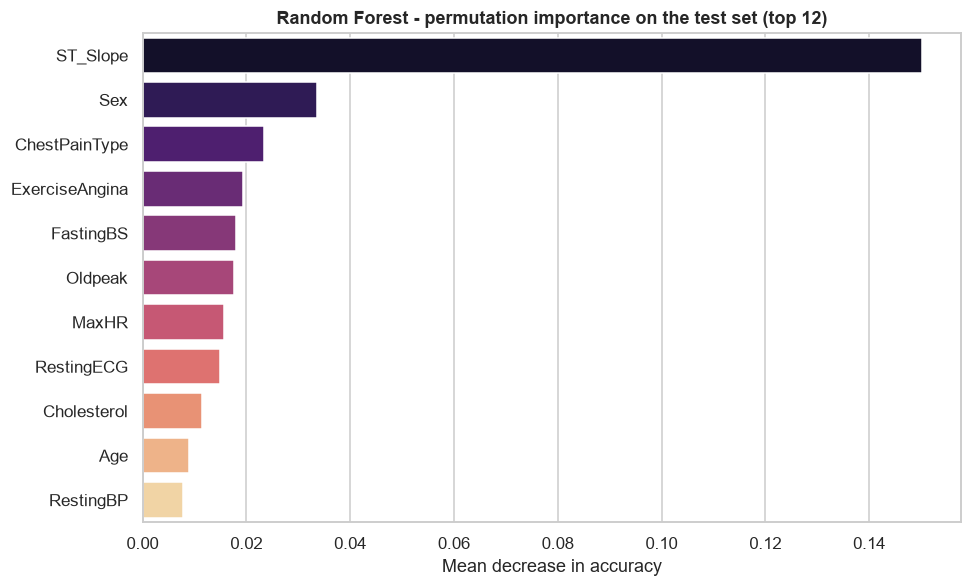
Figure 13 — Permutation importance on the test set (mean accuracy drop).
Interpretation. ST_Slope is unambiguously the dominant predictor in both rankings. An
up-sloping ST segment is protective, while flat or down-sloping segments dramatically increase risk.
MaxHR, Oldpeak, ExerciseAngina, ChestPainType and Sex form the next tier. Age, fasting
blood sugar and cholesterol contribute smaller amounts; cholesterol is much weaker after the
impossible zeros are corrected. RestingECG is consistently unimportant. The logistic coefficients
(figures/14_logistic_coefficients.png) confirm the directions: a flat ST slope, male sex,
exercise-induced angina, higher fasting blood sugar and higher Oldpeak increase the log-odds of
disease, while a high MaxHR, an up-sloping ST segment and the non-ASY chest-pain types (ATA, NAP,
TA) decrease it. ASY and Down are the dropped reference levels, so they appear as the baseline
rather than as separate coefficients.
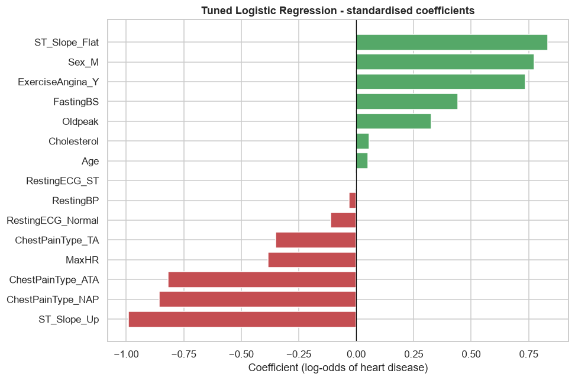
Figure 14 — Standardised Logistic Regression coefficients (log-odds of heart disease).
On the held-out test set, Logistic Regression performed best on accuracy (0.8859), F1 (0.8986) and recall (0.9118), with the second-best AUC (0.9323, behind 0.9430 for Gaussian Naive Bayes). Under 5-fold cross-validation, SVM had the highest mean accuracy (0.8584), with Random Forest (0.8529) and Logistic Regression (0.8515) close behind. Because the top three are separated by less than one standard deviation, there is no statistically decisive winner.
We select Logistic Regression as the final model for three reasons:
After median imputation, one-hot encoding and standardisation, the clinical measurements have a
strong, largely additive relationship with the log-odds of heart disease. In particular, the
ST-slope indicators, Oldpeak, MaxHR and ExerciseAngina already encode the main exercise-stress
signal, and the dataset is close to linearly separable in this transformed space. L2 regularisation
(C ≈ 1) controls overfitting on 734 training rows. Random Forest and SVM can model non-linear
interactions, but they do not find additional signal that improves the test result; their similar
ROC-AUC confirms that the simple model captures most of the available predictive information.
The single Decision Tree is much worse because an unpruned tree grows until its leaves are pure, memorising noise in the training data. Random Forest fixes this by averaging many de-correlated trees (bagging), which reduces variance and improves generalisation — but not enough to beat the regularised linear model on this relatively small dataset.
Gaussian Naive Bayes is a useful surprise: despite its independence assumption, it has the highest ROC-AUC and second-highest test accuracy, because the per-feature class distributions are sufficiently different to rank patients well. Its lower cross-validation score suggests the test result is partly favourable noise.
The unanimous top signal is ST slope, followed by maximum heart rate, ST depression, exercise-induced angina, chest-pain type and sex. These are clinically plausible: exercise-stress ECG behaviour and sex are established risk indicators. Age adds a smaller but consistent contribution. Cholesterol and resting blood pressure are weaker than their clinical reputation might suggest, at least in this dataset; the cholesterol result is partly explained by the large number of invalid zero records. Resting ECG carries little unique information once the other features are known.
The cholesterol finding is a concrete example of why EDA and domain knowledge matter. A purely automatic pipeline would have kept 172 zeros as real cholesterol measurements, concluded that cholesterol is negatively associated with heart disease, and produced a scientifically misleading report. Marking impossible values as missing changed both the correlation sign and the feature's importance. This is one of the most valuable lessons of the project.
Cholesterol is zero for 172 patients, and 152 of
those are in the disease group. Median imputation is simple but may bias the cholesterol
relationship; a model that handles missingness natively or a probabilistic imputer could be
better.This project delivered a complete, reproducible machine-learning study of heart-disease prediction. After domain-aware cleaning and preprocessing, six classifiers were compared with a comprehensive set of metrics. Logistic Regression achieved the best held-out performance (88.59% accuracy, 0.8986 F1, 0.9323 ROC-AUC), while SVM achieved the best cross-validated accuracy (85.84%). The top models were statistically indistinguishable, and the simpler, interpretable Logistic Regression was chosen as the final model. Feature importance consistently highlighted ST slope, maximum heart rate, ST depression, exercise angina, chest-pain type and sex, matching clinical expectations.
Future work should focus on external validation, additional clinical features, modern gradient- boosting models, probability calibration, cost-sensitive threshold selection, SHAP-based explanations, and nested cross-validation. Deploying the saved pipeline behind a small API or dashboard would make the model usable in a research or educational setting, but prospective clinical validation would be required before any real-world medical use.
Project structure
ml-assignment/
├── data/
│ └── heart.csv # 918-patient dataset
├── notebooks/
│ └── Heart_Disease_Prediction.ipynb # executed notebook (code + outputs)
├── report/
│ ├── Project_Report.md # this report
│ ├── Project_Report.html # print-ready report
│ ├── Project_Report.pdf # PDF version of this report
│ ├── Heart_Disease_Prediction.html # rendered notebook (code + outputs)
│ ├── results.json # all key metrics
│ ├── model_comparison.csv
│ ├── cross_validation.csv
│ ├── final_model_comparison.csv
│ ├── tuning_random_forest.csv
│ ├── tuning_logistic_regression.csv
│ └── figures/ # all EDA and result figures
├── models/
│ ├── random_forest_tuned.joblib
│ └── logistic_regression_tuned.joblib
├── main.py # runs the notebook end-to-end
├── pyproject.toml
└── README.md
How to run
# install dependencies
uv sync
# execute the whole notebook (regenerates all figures and metrics)
uv run python main.py
or open the notebook directly:
uv run jupyter lab notebooks/Heart_Disease_Prediction.ipynb
Environment: Python 3.14.5, pandas 3.1.1, NumPy 2.5.4, scikit-learn 1.9.1, matplotlib 3.11.2, seaborn 0.13.2.